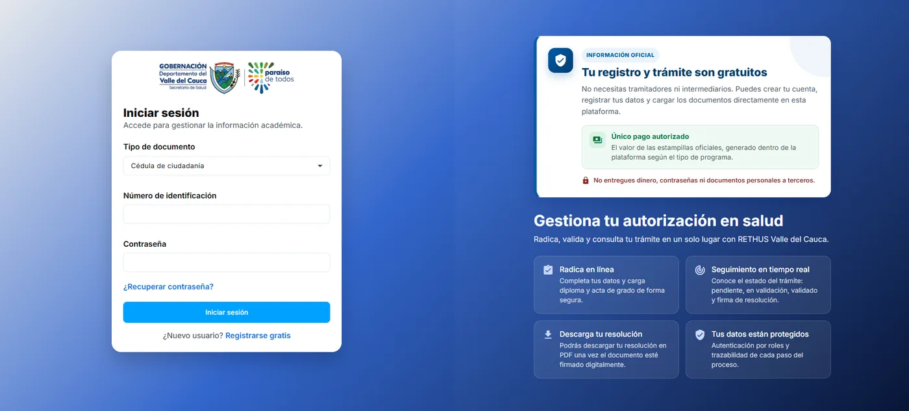
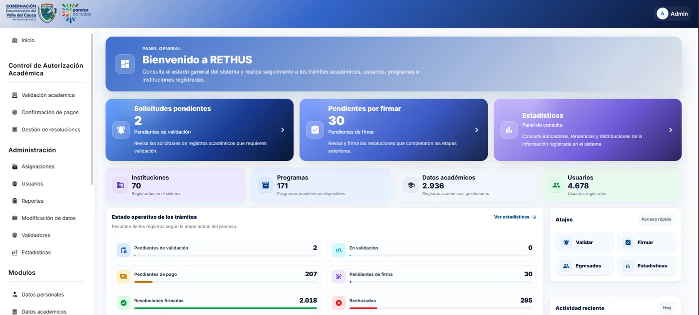

Caso insignia · sector público
RETHUS Valle del Cauca
Gobernación del Valle del Cauca · Secretaría de Salud
En producción desde abril de 2026 · rethus.valledelcauca.gov.co ↗
El problema
Los egresados del sector salud debían desplazarse físicamente hasta la Gobernación para tramitar la resolución que los habilita a ejercer: filas, papeleo y semanas de espera.
Lo que construí
Diseñé y construí desde cero la base de datos, la API REST en Laravel y la interfaz en Angular: más de 50 módulos funcionales, entre ellos registro de usuario, carga y validación de documentos, gestión de pagos, firma digital y notificaciones automáticas. Integré una API externa de firma digital, respaldo documental en la nube y avisos por correo al ciudadano.
El resultado
Un trámite que antes exigía atención presencial —incluido el pago— ahora se resuelve en línea de principio a fin, con trazabilidad completa para la Secretaría de Salud.
- Angular
- Laravel
- PostgreSQL
- API REST
- Firma digital
- GCP